10.11.2026 · Bielik 11B · temperatura 0.7
3 zakończone przebiegi, 4 zapisane warianty oraz próby anulowania i walidacji.
Raport · Wyniki · Dane z API · Trwałość danych
| Próba | Wynik | Czas |
|---|---|---|
| Pusta scena, 1 wariant | OK | 79,4 s |
| Kontynuacja sceny, 1 wariant | OK | 116,7 s |
| Generowanie 2 wariantów | OK | 165,9 s |
| Anulowanie | Bez zapisanego wariantu | — |
| Polecenie „adada” | Odrzucone, HTTP 422 | — |
| Zamiana wariantu i cofanie | Bez duplikowania tekstu | — |
| Powrót / odświeżenie podczas generowania | Przywrócone polecenie i postęp | — |
| Ponowne logowanie | Sceny, warianty i historia zachowane | — |
Teksty nadal wymagają redakcji: pojawiają się powtórzenia, zbędne didaskalia i błędy ciągłości, mimo ocen Krytyka 8–9/10.
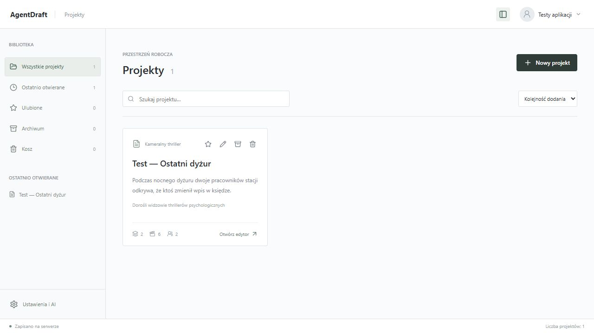
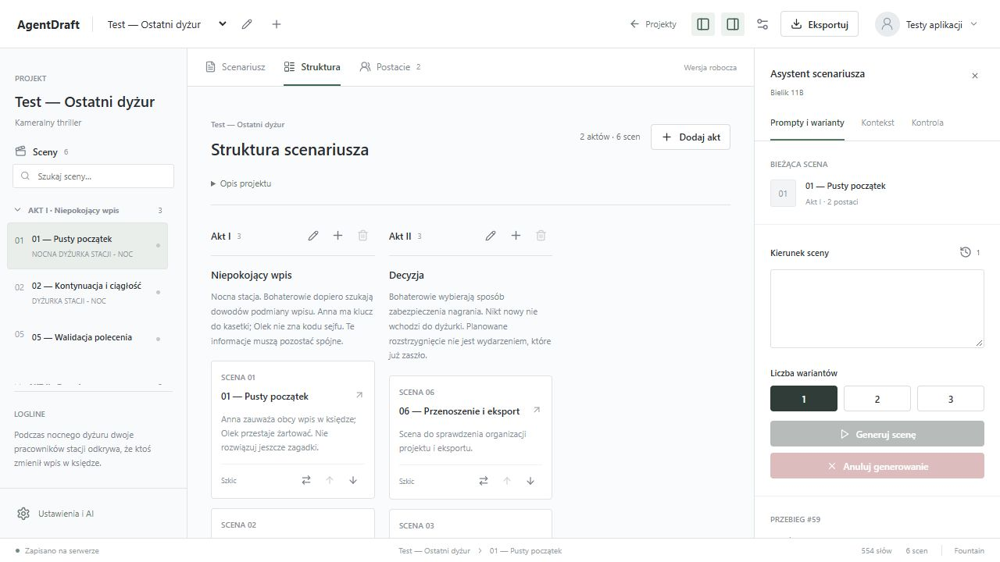
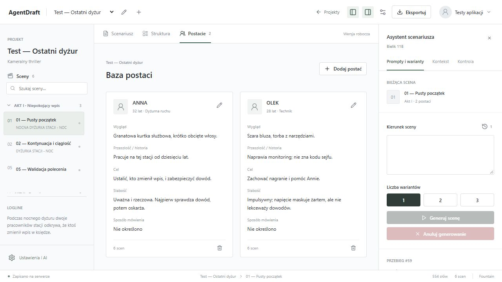
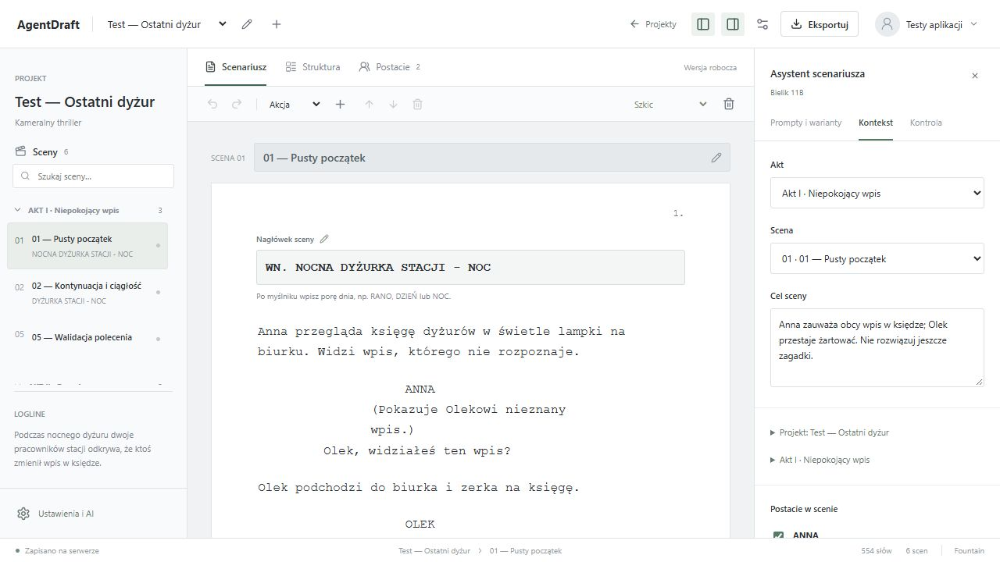
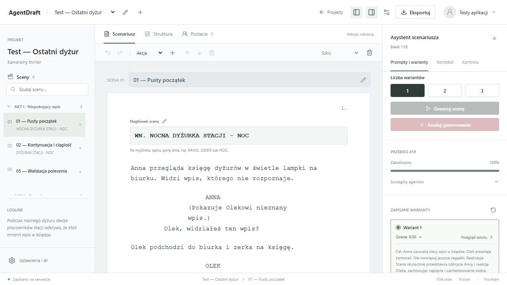
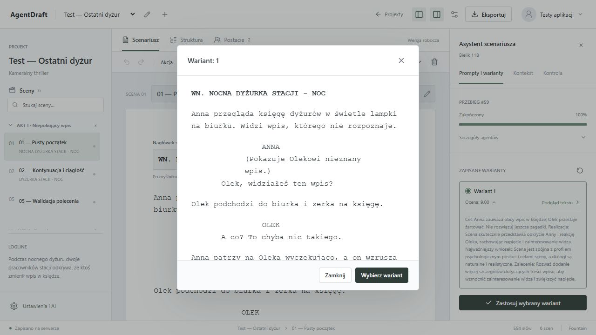
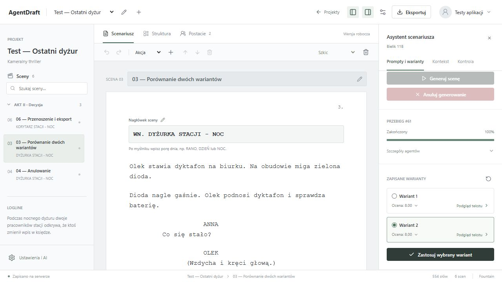
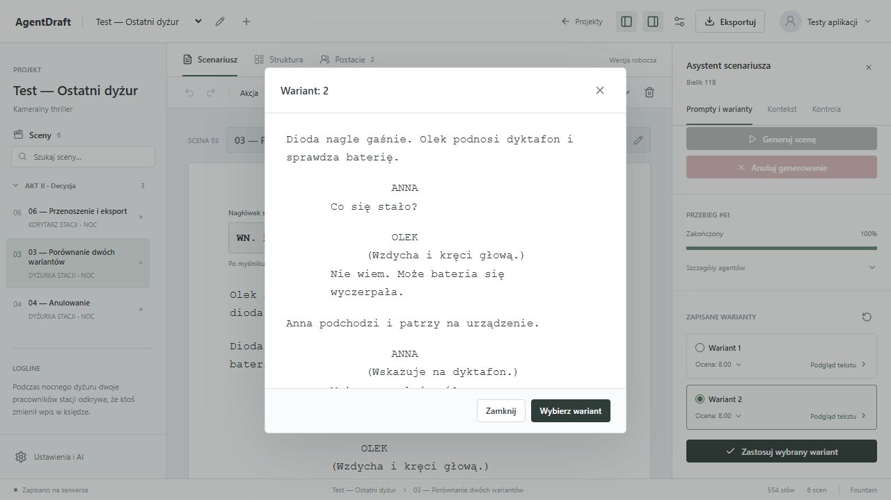
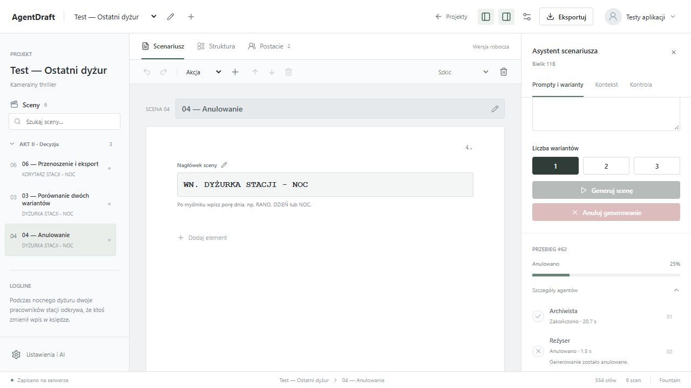
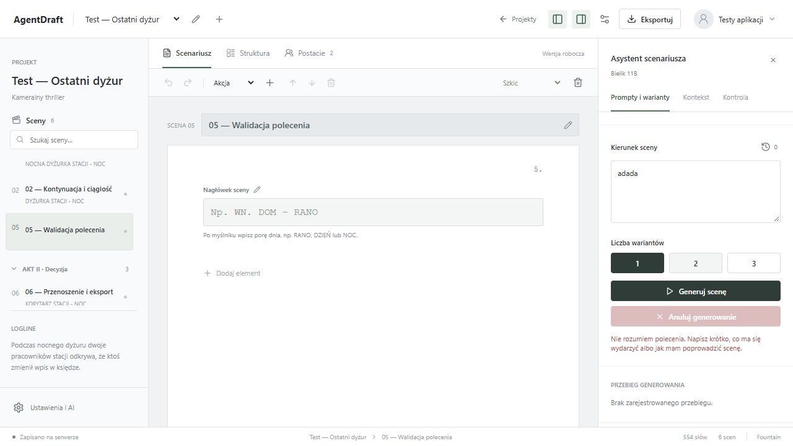
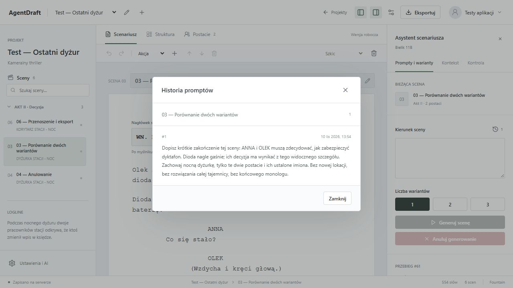
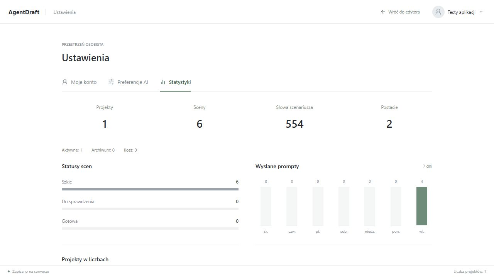
Rozpocznij krótką scenę w nocnej dyżurce stacji. ANNA znajduje w księdze dyżurów wpis, którego nie sporządziła. OLEK próbuje ją zbyć żartem, ale widok wpisu go niepokoi. Zakończ na tym konkretnym odkryciu, bez rozwiązania zagadki. Tylko ANNA i OLEK; do 6 krótkich elementów akcji i wypowiedzi. Wymyśl pasujący nagłówek.
Anna przegląda księgę dyżurów w świetle lampki na biurku. Widzi wpis, którego nie rozpoznaje. ANNA (Pokazuje Olekowi nieznany wpis.) Olek, widziałeś ten wpis? Olek podchodzi do biurka i zerka na księgę. OLEK A co? To chyba nic takiego. Anna patrzy na Oleka wyczekująco, a on wzrusza ramionami. ANNA To nie ty go sporządziłeś? OLEK (Zaprzecza i sugeruje pomyłkę.) Nie, no co ty! Może to jakaś pomyłka albo... sam nie wiem. Anna zaznacza datę i godzinę wpisu na kartce. ANNA Sprawdźmy nagranie z monitoringu. Może tam znajdziemy odpowiedź. Olek kiwa głową i podchodzi do panelu kontrolnego.
Dopisz krótki dalszy ciąg tej sceny, bez powtarzania początku. OLEK zauważa na obudowie dyktafonu świeże zadrapanie i proponuje zabezpieczenie urządzenia. ANNA podejmuje konkretną decyzję. Jedyny klucz nadal jest w kieszeni ANNY, a OLEK nie zna kodu sejfu. Nie zmieniaj miejsca ani pory dnia i nie rozwiązuj zagadki. Tylko ANNA i OLEK.
Olek podchodzi do biurka i przygląda się obudowie dyktafonu. OLEK (Zauważa świeże zadrapanie.) Hej, Anka, widziałaś to? Anna podchodzi do Oleka i spogląda na obudowę dyktafonu. ANNA (Zaniepokojona zadrapaniem.) Co to jest? OLEK (Proponuje zabezpieczenie urządzenia.) To wygląda na świeże zadrapanie. Może ktoś próbował coś zrobić z dyktafonem? Anna kiwa głową i myśli przez chwilę. ANNA (Podejmuje decyzję o zabezpieczeniu urządzenia.) Masz rację. Musimy lepiej zabezpieczyć dyktafon. Anna otwiera metalową kasetkę i wyjmuje jedyny klucz. Olek przygląda się, jak Anna wkłada klucz do kieszeni kurtki. Anna zamyka kasetkę i odkłada ją na biurko. ANNA Tylko ja mam klucz, Olek. A kod do sejfu znam tylko ja. Olek kiwa głową, rozumiejąc sytuację. OLEK Myślisz, że ktoś próbował zatrzeć ślady? ANNA To możliwe. Lepiej, żeby nikt go nie znalazł. Anna wkłada dyktafon do kieszeni kurtki. OLEK Mogę trzymać kasetkę z nagraniem w sejfie. ANNA Nie, Olek. Tylko ja znam kod. Muszę trzymać kasetkę przy sobie. Olek wzdycha, akceptując decyzję Anny. ANNA Wiem, że to ryzykowne, ale musimy być ostrożni. Będę trzymać kasetkę przy sobie. OLEK Ufasz mi z sejfem, Anka? ANNA Nie mamy wyboru, Olek. Ale musimy być ostrożni. OLEK (Sugeruje poinformowanie kogoś o sytuacji.) Może powinniśmy poinformować kogoś o tym wszystkim? ANNA Nie, Olek. Musimy sami rozwiązać ten problem.
Dopisz krótkie zakończenie tej sceny: ANNA i OLEK muszą zdecydować, jak zabezpieczyć dyktafon. Dioda nagle gaśnie; ich decyzja ma wynikać z tego widocznego szczegółu. Zachowaj nocną dyżurkę, tylko te dwie postacie i ich ustalone imiona. Bez nowej lokacji, bez rozwiązania całej tajemnicy, bez końcowego monologu.
Dioda nagle gaśnie. Olek sprawdza, czy dyktafon się wyłączył. ANNA Co się dzieje? OLEK Nie wiem, ale ktoś mógł wyłączyć to zdalnie. Anna sugeruje, że ktoś mógł wyłączyć urządzenie zdalnie. ANNA Myślisz, że ktoś próbuje zatrzeć ślady? OLEK To możliwe. Musimy lepiej zabezpieczyć nagranie. Olek proponuje przeniesienie dyktafonu do sejfu. ANNA Nie znamy kodu do sejfu. Anna przypomina, że nie znają kodu do sejfu. OLEK No tak, masz rację. Co w takim razie? Olek sugeruje ukrycie dyktafonu w kieszeni kurtki Anny. ANNA To ryzykowne. Mogę go zgubić. Anna zgadza się, ale obawia się, że może go zgubić. OLEK Ale to lepsze niż zostawić go tutaj. Mogę zabezpieczyć go taśmą izolacyjną. Olek proponuje zabezpieczenie dyktafonu taśmą izolacyjną i umieszczenie go w kieszeni kurtki Anny.
Dioda nagle gaśnie. Olek podnosi dyktafon i sprawdza baterię. ANNA Co się stało? OLEK (Wzdycha i kręci głową.) Nie wiem. Może bateria się wyczerpała. Anna podchodzi i patrzy na urządzenie. ANNA (Wskazuje na dyktafon.) Można go naładować? OLEK (Kręci głową.) Nie mamy ładowarki ani zasilacza. Ale może to ktoś celowo wyłączył. Anna marszczy brwi i zastanawia się. ANNA (Wzdycha i kręci głową.) To możliwe. Olek siada na krześle i opiera się o biurko. OLEK (Mówi z namysłem.) Może powinniśmy zabezpieczyć nagranie w inny sposób. ANNA (Przygląda się Olkowi.) Jak? OLEK (Wskazuje na telefon.) Na przykład skopiować je na telefon. Anna się zastanawia. ANNA (Mówi z niepokojem.) Ale czy to bezpieczne, skoro ktoś już raz ingerował w nasze dowody? OLEK (Kiwa głową.) Racja. Musimy znaleźć trwalsze rozwiązanie. Anna przypomina sobie o metalowej kasetce. ANNA (Mówi z nadzieją.) Wiem! Możemy schować dyktafon w metalowej kasetce, w której trzymam ważne dokumenty. Anna podchodzi do biurka i otwiera szufladę. ANNA (Wyjmuje klucz.) Masz rację. To powinno być bezpieczne. Anna otwiera kasetkę i wkłada do niej dyktafon. Anna zamyka kasetkę i odkłada ją na bok. OLEK Czy ta kasetka jest bezpieczna? ANNA (Uśmiecha się lekko.) Tak. Nikt oprócz mnie nie zna kodu do sejfu, więc powinno być dobrze. OLEK Dobrze. To nam wystarczy.
Napisz krótki dalszy ciąg rozmowy ANNY i OLKA o zabezpieczeniu nagrania. Zachowaj nocną dyżurkę. Nie rozwiązuj zagadki.
adada